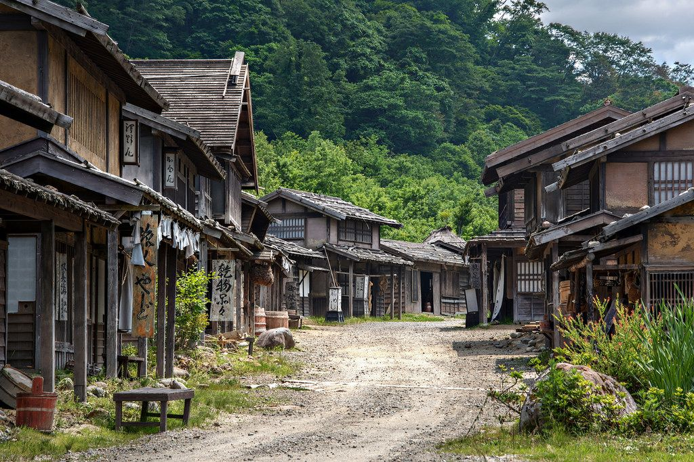
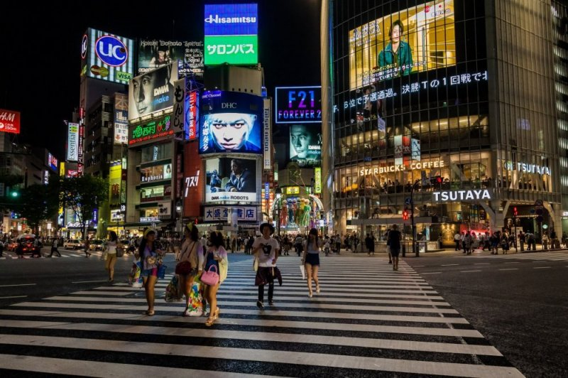

A Evolução de Tokyo
Tokyo, originalmente conhecida como Edo, começou como um pequeno vilarejo de pescadores. No século XVII, tornou-se a capital do Japão e, desde então, evoluiu para uma das maiores e mais influentes metrópoles do mundo.
Período Edo
Esse período foi marcado pelo forte isolamento político-econômico do país e rígido controle interno, regulando os feudos através do código de leis. Em 1868, o período terminou com a Restauração Meiji, quando o governo imperial recuperou sua autoridade, marcando o fim das ditaduras feudais e iniciando a modernização do Japão.
Período Moderno
A diferença estética, arquitetônica, cultural e tecnológica mudou bastante com o tempo, se tornando algo mais futurista, principalmente no pós-guerra.
